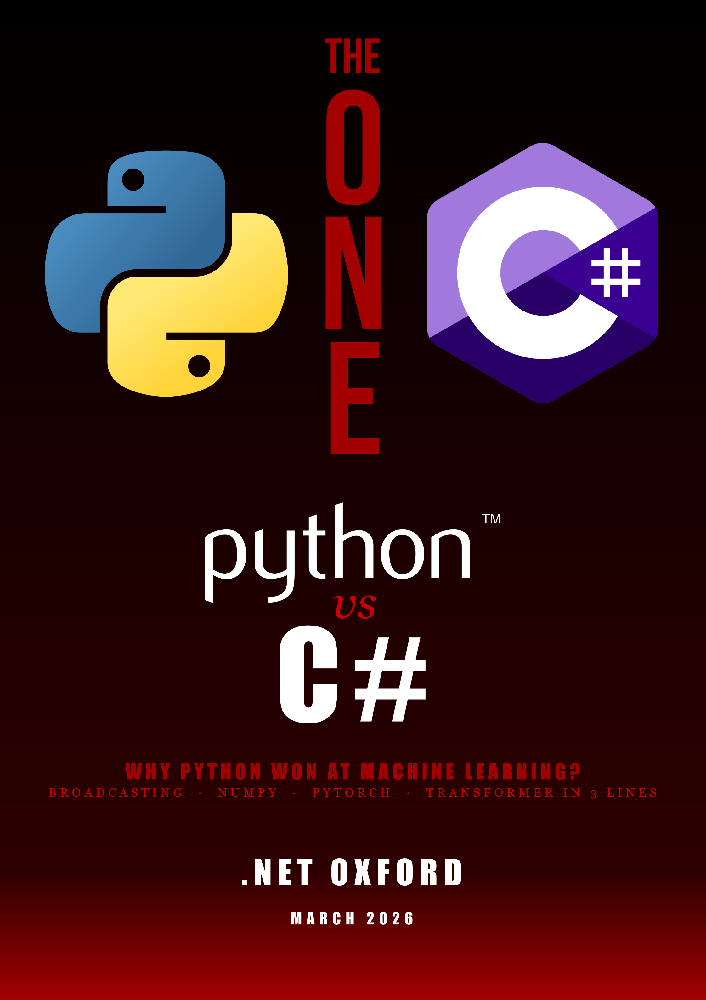
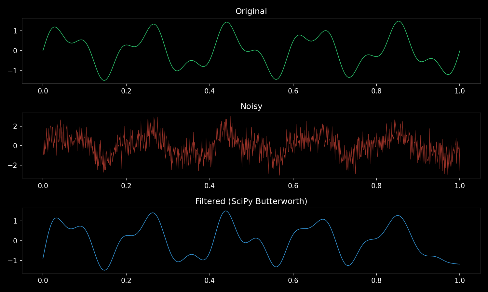

slides and code available at dotnetoxford-pythonvdotnet.bryars.com
Guido van Rossum
Anders Hejlsberg
more
Yet → Python dominates ML
One standard per job — everything speaks NumPy
Python doesn’t do the maths — it orchestrates C, Fortran, and CUDA
# @ calls into BLAS dgemm (Fortran) — not Python
C = A @ B # matrix multiply
# Broadcasting — no loops, no copies
prices = np.array([10, 20, 30]) # shape (3,)
tax = np.array([[1.1],
[1.2]]) # shape (2, 1)
totals = prices * tax # shape (2, 3) — automatic
# Vectorised operations — one call to C
distances = np.sqrt(np.sum((points - centre)**2, axis=1))
# Slicing — views, not copies
batch = images[0:32, :, :, :] # zero-cost sliceSuccinct and powerful — but can trip you up (print shapes early and often)
Same idea, different worlds. Jupyter reached researchers. LINQPad reached developers.
Everything speaks NumPy
import numpy as np
from scipy import signal
import matplotlib.pyplot as plt
t = np.linspace(0, 1, 1000) # NumPy
noisy = np.sin(2*np.pi*5*t) + np.random.randn(len(t))
filtered = signal.filtfilt(*signal.butter(4, 15, fs=1000), noisy) # SciPy ← NumPy
plt.plot(t, filtered) # Matplotlib ← NumPyOne array type. Every library accepts it. No adapters needed.
Python won because it made
fast things easy
C# can win where it makes
safe things fast
| Example | Python | C# |
|---|---|---|
| GPU computing | python gpu.py |
dotnet run (Gpu/) |
| Autograd | python autograd.py |
dotnet run (Autograd/) |
| Train MLP (XOR) | python mlp.py |
dotnet run (Mlp/) |
| Duck typing | python duck_typing.py |
dotnet run (DuckTyping/) |
| Lorenz attractor | python lorenz.py |
dotnet run (Lorenz/) |
| Ecosystem (NumPy→SciPy→plot) | python ecosystem.py |
— |
| Vectorisation benchmark | python vectorisation.py |
— |
Python: cd examples/python && pip install -r requirements.txt
C#: cd examples/csharp/<folder> && dotnet run
import torch
x = torch.tensor(3.0, requires_grad=True)
y = x**2 + 2*x + 1
y.backward()
print(x.grad) # 8.0using TorchSharp;
var x = torch.tensor(3.0f,
requiresGrad: true);
var y = x.pow(2) + 2 * x + 1;
y.backward();
Console.WriteLine(
x.grad()!.item<float>());
x**2 vs x.pow(2) •
x.grad vs x.grad()!.item<float>() •
Paper cuts add up
import torch
a = torch.randn(1000, 1000)
b = torch.randn(1000, 1000)
c = a @ b # CPU
a, b = a.cuda(), b.cuda()
c = a @ b # GPUusing TorchSharp;
var a = torch.randn(1000, 1000);
var b = torch.randn(1000, 1000);
var c = a.mm(b); // CPU
a = a.cuda();
b = b.cuda();
c = a.mm(b); // GPUimport torch
import torch.nn as nn
X = torch.tensor([[0,0],[0,1],
[1,0],[1,1]], dtype=torch.float)
y = torch.tensor([[0],[1],
[1],[0]], dtype=torch.float)
model = nn.Sequential(
nn.Linear(2, 8), nn.ReLU(),
nn.Linear(8, 1), nn.Sigmoid())
opt = torch.optim.Adam(
model.parameters(), lr=0.01)
for _ in range(1000):
loss = nn.functional \
.binary_cross_entropy(
model(X), y)
opt.zero_grad()
loss.backward()
opt.step()using TorchSharp;
using static TorchSharp.torch;
using static TorchSharp.torch.nn;
var X = torch.tensor(new float[,]
{{0,0},{0,1},{1,0},{1,1}});
var y = torch.tensor(new float[,]
{{0},{1},{1},{0}});
var model = Sequential(
("fc1", Linear(2, 8)),
("relu", ReLU()),
("fc2", Linear(8, 1)),
("sig", Sigmoid()));
var opt = torch.optim.Adam(
model.parameters(),
learningRate: 0.01);
for (int epoch = 0; epoch < 1000;
epoch++) {
using var pred =
model.forward(X);
using var loss = functional
.binary_cross_entropy(
pred, y);
opt.zero_grad();
loss.backward();
opt.step();
}
Named tuples • using var for every tensor •
model.forward(X) vs model(X) •
learningRate: vs lr=
import numpy as np
import matplotlib.pyplot as plt
dt, n = 0.01, 10000
sigma, beta, rho = 10, 8/3, 28
xyz = np.zeros((n, 3))
xyz[0] = [0.1, 0, 0]
for i in range(n - 1):
x, y, z = xyz[i]
xyz[i+1] = xyz[i] + dt*np.array([
sigma*(y-x),
x*(rho-z) - y,
x*y - beta*z])
fig = plt.figure(facecolor="black")
ax = fig.add_subplot(projection="3d")
ax.scatter(*xyz.T,
c=np.arange(n), cmap="plasma")const double dt = 0.01;
const int n = 10000;
const double sigma = 10,
beta = 8.0/3, rho = 28;
var x = new double[n];
var y = new double[n];
var z = new double[n];
x[0] = 0.1;
for (int i = 0; i < n-1; i++) {
x[i+1] = x[i]+dt*sigma*(y[i]-x[i]);
y[i+1] = y[i]+dt*(x[i]*(rho-z[i])-y[i]);
z[i+1] = z[i]+dt*(x[i]*y[i]-beta*z[i]);
}
// Plot? ScottPlot? OxyPlot?
// None do 3D scatter well.
// Export to CSV, open in Python.import numpy as np
from scipy import signal
import matplotlib.pyplot as plt
t = np.linspace(0, 1, 1000)
noisy = np.sin(2*np.pi*5*t) \
+ np.random.randn(len(t))
b, a = signal.butter(4, 15, fs=1000)
filtered = signal.filtfilt(b, a, noisy)
plt.plot(t, filtered)
plt.show()// Step 1: generate signal
// Math.NET? System.Numerics?
// Step 2: filter it
// Math.NET.Filtering? DIY?
// Step 3: plot it
// ScottPlot? OxyPlot?
//
// Three libraries.
// Three different array types.
// Three sets of docs.
//
// Or...
//
// Process.Start("python",
// "ecosystem.py");